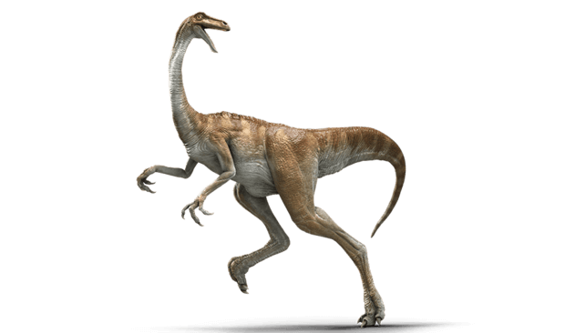

Gallimimus
Fowl or Chicken Mimic
Diet: Herbivore
Gallimimus was a speedy theropod, the largest of its type. They were called chicken mimics because they probably moved like modern flightless birds.
Unlike other theropods, Gallimimus had no teeth. In fact, it had a very small head. This was probably one of the fastest dinosaurs, with speed like an ostrich, it could probably run up to 30 miles per hour.
With its small, toothless head, it is believed that Gallimimus probably had a diet of insects, small animals, eggs, and maybe even some plants.